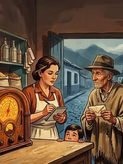

Radionovelas de ayer presenta
La Hora de la Fortuna

- Guatancuy, octubre de 1958.
- 10 capítulos de 19 minutos.
- Uno nuevo cada mañana a las 6:00 a. m.
- Van 7 publicados.
Guatancuy, octubre de 1958. Tres radios en todo el pueblo y luz apenas de seis a diez de la noche. Eutimio Chitiva, el hombre más pobre del lugar, lleva dos años mandando sobres al gran concurso de la radio. Un miércoles por la noche, con la tienda llena, el animador dice su nombre. Eutimio se acaba de volver millonario.
La programación
Un capítulo nuevo cada mañana a las 6:00 a. m., hora de Colombia.
Ya salió
1. El hombre de los sobresvie 16 octEutimio, el más pobre del pueblo, lleva dos años mandando sobres a la radio. Esta noche dicen su nombre.2. El secreto de todo el pueblosáb 17 octEutimio murió de la dicha y el premio se entrega en persona. Obdulia tiene una idea que el padre no quiere oír.3. Llegó antes de tiempodom 18 octSaturnino ensaya para ser Eutimio. Tienen ocho días. De la flota del viernes se baja alguien que no esperaban.4. La gripa de Eutimiolun 19 octObdulia inventa una gripa, el forastero pregunta por una muerta de hace treinta años y don Belisario vio una tumba nueva.5. El precio del silenciomar 20 octObdulia cierra un trato con don Belisario y el delegado por fin ve a Eutimio. Pero pide quedarse a solas con él.6. Lo que dice el libromié 21 octSaturnino responde por un muerto, el forastero se vuelve frío y el padre Severo abre un libro que llevaba treinta años cerrado.7. Las cartas del ranchojue 22 octCarmenza abre el baúl de Eutimio y encuentra veintinueve cartas que nunca mandó, mientras don Belisario le pone un plazo y ella decide hablar.Lo que viene
Quiénes son
Eutimio Chitiva, el jornalero que ganó. Carmenza Rincón, la tendera que todo lo apunta. Misiá Obdulia, la que reparte las noticias. Saturnino, el sacristán. El padre Severo, que nunca miente. Don Belisario, el hacendado. Y un forastero de la capital.
Más sobre la novela: cómo se hizo, el pueblo, la época
Guatancuy, octubre de 1958. Ochenta casas de tapia, una plaza empedrada, una iglesia, una pila de agua. Tres radios en todo el pueblo, una sola flota al día y luz eléctrica apenas de seis a diez de la noche. Aquí vive Eutimio Chitiva, el hombre más pobre del lugar, que cada semana, desde hace dos años, manda un sobre con tres envolturas de chocolate al gran concurso de la radio. Un miércoles por la noche, con la tienda llena, el animador dice su nombre. Cincuenta mil pesos. Y Eutimio, en vez de brincar, dice que va por la cédula y sale.
La Hora de la Fortuna es una radionovela colombiana nueva, hecha en 2026 con el sabor de las que se oían en los años cincuenta: tendera, sacristán, cura, hacendado y un forastero que llega antes de tiempo. Son diez capítulos de menos de veinte minutos, uno cada mañana a las seis, para oír completos en el celular. Esta página cuenta de qué va, quiénes son los que hablan y en qué orden oírla. Sin contarle el final.
De qué trata
El premio del concurso se entrega en persona, en acto público, al ganador con su cédula en la mano. Un delegado de la casa patrocinadora viene de la capital a entregarlo, y si en diez días no hay a quién, la plata se vuelve a sortear al aire. Con esa regla, y con una noticia que el pueblo recibe la misma noche del sorteo, Guatancuy toma una decisión que nadie debería tomar y que todos toman: que Eutimio Chitiva siga siendo Eutimio Chitiva hasta que llegue el delegado, pase lo que pase.
Lo que sigue es comedia de costumbres con un pueblo entero metido en un enredo: ensayos en un rancho de bahareque, una gripa inventada, un cura que se opone y calla, un hacendado que lo ve todo y cobra por callar, y una tendera que entró al engaño a su pesar y que se enamora de quien no debe. Y debajo del enredo, un secreto viejo: un rumor de que Eutimio, de joven, dejó un hijo donde unas monjas.
¿Usted qué haría si se ganara el premio de la radio y el pueblo entero se enterara?
Los que hablan
Carmenza Rincón, veintisiete años, tendera. Heredó la tienda de su padre y todo lo apunta en una libreta. El pueblo ya la da por quedada. Es la única amiga de Eutimio: le fía el pan y le guarda las envolturas. Dice "hagamos cuentas" y "eso no me cuadra", y nombra a Dios poco y en serio.
Eutimio Chitiva, sesenta y dos años que parecen ochenta. Jornalero sin tierra, hace mandados, barre el atrio sin que nadie le pague. Viudo desde hace treinta años. Habla bajito, con dichos, y cierra con "si Dios no dispone otra cosa".
Misiá Obdulia Pachón, sesenta y uno, viuda, madrina de Carmenza. Reza el rosario y reparte las noticias. Las ideas torcidas son siempre suyas, y las anuncia con "yo no es por hablar, mija, pero".
Saturnino Cuervo, cincuenta y ocho, sacristán y campanero. De la estatura y el encorvado de Eutimio, y por eso le toca lo que le toca. Se santigua a media frase y pide perdón a la sotana antes de decir cualquier cosa.
El padre Severo Forero, setenta años, párroco de Guatancuy hace treinta y dos. Nunca miente: calla, cambia de tema o pregunta. "Dios no se afana, hija. Los que nos afanamos somos nosotros."
Don Belisario Umaña, cincuenta y cinco, hacendado, dueño del único camión y de medio pueblo. Pretendió a Carmenza y ella le dijo que no. "Aquí no se mueve una hoja sin que yo sepa."
El forastero, treinta años, de la capital, cortés y cansado, que se baja de la flota del viernes con sombrero y maletín preguntando por Eutimio Chitiva. Pregunta mucho y no cuenta nada de sí mismo.
Y el animador de La Hora de la Fortuna, la única voz que suena a radio, porque sale de la radio de tubos de la tienda: "Tres envolturas, su nombre y su pueblo, y espere usted noticias de esta emisora".
El mundo de 1958
Todo lo que se oye en la serie es de época o inventado con sabor de época. La flota llega de la capital a las cuatro de la tarde y sale a las seis de la mañana. Las noticias entran por la radio de la tienda, por el periódico que llega con un día de atraso y por telegrama, que se recoge en el pueblo grande, a una hora. No hay teléfono, no hay médico, no hay banco. Se come changua, cuchuco, almojábana y chocolate en pocillo; se toma cerveza en la tienda y chicha a escondidas. Por la radio suenan boleros, bambucos, el rosario y el concurso del miércoles.
Las marcas son inventadas, para que nadie se ofenda: Chocolate El Arrebol, el que madruga con usted; Jabón Flor de Sabana; Café Tres Campanas; Brillantina Gardenia Real; Fósforos El Relámpago. El pueblo no se ubica en ningún mapa; es tierra fría, a tres horas de flota de la capital, y con eso basta.
Las mujeres estrenan cédula, porque votaron por primera vez el diciembre anterior. En la capital hay televisión. En Guatancuy nadie la ha visto.
Los capítulos
Estos son los capítulos de La Hora de la Fortuna, completos, en orden, para escuchar cuando quiera. Cada uno dura menos de veinte minutos y sale a las seis de la mañana, uno por día. Si es la primera vez que llega, empiece por el uno: la historia se entiende desde ahí y cada capítulo arranca recordando lo que pasó en el anterior, como hacían las radio novelas de antes para el que se había perdido la del día.
Pasa en Guatancuy, un pueblo de tierra fría, en octubre de 1958. El hombre más pobre del pueblo se gana un concurso de la radio, y lo que el pueblo hace con esa noticia es lo que aquí se cuenta. El capítulo de hoy aparece destacado; el de mañana dice a qué hora sale. Si prefiere oírlos de noche, también sirven: nadie le va a apurar.
| Capítulo | Título | Sale |
|---|---|---|
| 1 | El hombre de los sobres | Viernes 16 de octubre, 6 a. m. |
| 2 | El secreto de todo el pueblo | Sábado 17 |
| 3 | Llegó antes de tiempo | Domingo 18 |
| 4 | La gripa de Eutimio | Lunes 19 |
| 5 | El precio del silencio | Martes 20 |
| 6 | Lo que dice el libro | Miércoles 21 |
| 7 | Las cartas del rancho | Jueves 22 |
| 8 | El otro don Régulo | Próximamente |
| 9 | Me llamo Álvaro | Próximamente |
| 10 | El premio de Eutimio | Próximamente |
Cada capítulo arranca con el locutor recordando lo que pasó en el anterior, como se hacía antes, así que si se perdió uno no se pierde la historia. Pero empiece por el primero: la radionovela se entiende desde la tienda, un miércoles por la mañana, con un hombre que pide fiado un sobre y una estampilla.
Cómo oírla
En el celular, sin descargar nada y sin cuenta. Abra el capítulo, toque la perilla y arranca; si cierra a la mitad, al volver sigue donde iba. Debajo del reproductor hay un botón para leer lo que van diciendo, frase por frase, y más abajo el guion completo del capítulo, por si quiere seguirlo con los ojos o volver a una frase. Al terminar, un botón de WhatsApp le manda el capítulo uno a quien usted quiera con un mensaje ya escrito.
La radionovela sale a las seis de la mañana porque a esa hora salían las de antes, para oírlas con el tinto. Pero se puede oír a cualquier hora, y de noche, con la luz apagada, suena mejor.
Por qué hacemos radionovelas en 2026
Porque nadie las está haciendo. Las radionovelas colombianas de Todelar, Caracol y la Radio Nacional se apagaron hacia 1995, y lo que ha vuelto desde entonces son reediciones de Kalimán y audionovelas sueltas. No había una serie nueva, de época, con capítulo diario, hecha para oír completa. Esta es la primera de esta casa. Cuando termine, viene otra, y la trama la escogen los oyentes.
Preguntas que nos hacen
¿La Hora de la Fortuna es una radionovela real de 1958?
No. Es una radionovela colombiana nueva, de 2026, ambientada en octubre de 1958. El pueblo, el concurso, las marcas y los personajes son inventados; la época, la comida, la radio de tubos y la manera de hablar son de verdad.
¿Cuántos capítulos tiene y cuánto dura cada uno?
Diez capítulos, de entre trece y diecinueve minutos. Sale uno cada mañana a las seis desde el viernes 16 de octubre de 2026.
¿Dónde se puede escuchar La Hora de la Fortuna?
Aquí, en radionovelasdeayer.com, completa y sin registro, en el celular o en el computador. No está en Spotify ni en otras plataformas por ahora.
¿Hay que oírla en orden?
Sí, conviene. Cada capítulo recuerda el anterior en un minuto, pero la historia empieza en el capítulo uno y el enredo se arma de ahí en adelante.
Si quiere saber a qué suena, dele al botón: el capítulo uno dura diecinueve minutos y empieza con una puerta que se abre y un "buenos días, doña Carmenza, con permiso".